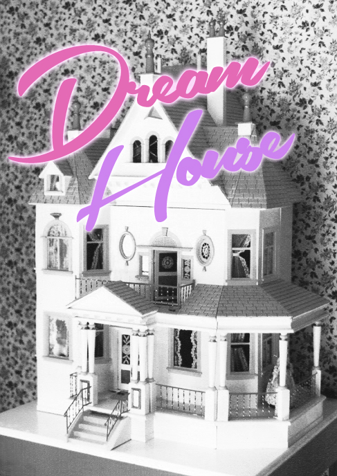
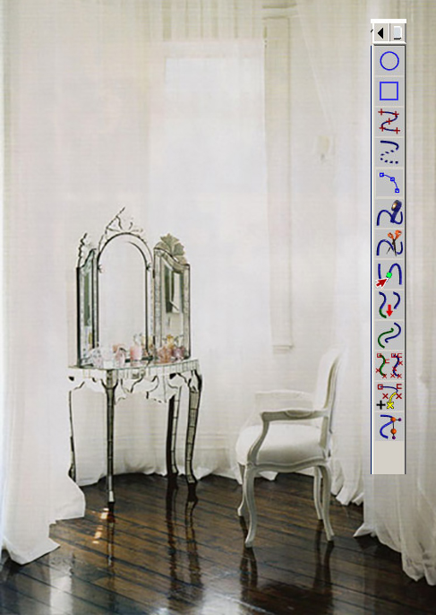

Simply put, a virtual dollhouse.
A virtual reality platform targeted at females, taking pinterest and tumblr style curation to the next level. Dream House allows users to design a virtual 3D space. Features include: social components (invite your friends to your house), allow for curators (tours and events in popular spaces), maker components (create your own design templates and objects for others to use). Minecraft meets Pinterest for the virtual age.
WHY DREAM HOUSE: Dollhouses trace their history back about four hundred years to the baby house display cases of Europe, which showed idealized interiors. This desire to craft an environment is a motherly
instinct naturally promoted by hormones during pregnancy, and is deeply rooted in social psychology. The desire to express oneself through style & images has been proven in recent years by the proliferation of curating sites that continue to drive female users like Pinterest and Tumblr. As we progress into new forms of engagement with technology (VR, Magic Leap, etc) a new landscape to explore this instinct is emerging.
Our team was invited to the 2015 River accelerator with this project.
In The Beautiful Future, Dream House is a narrative device, 'born from a tumblr and Pinterest merger after ownership of the Oculus Rift became ubiquitous. It is a "virtual dollhouse” and social network. The experience is highly addictive as users have access to virtual possessions they are unable to afford in real life. In “The Beautiful Future” our protagonist's mother slowly becomes addicted to the game, and throughout the story we see her real house fall into disrepair as she becomes something of a celebrity for her designs within the Dream House network.'